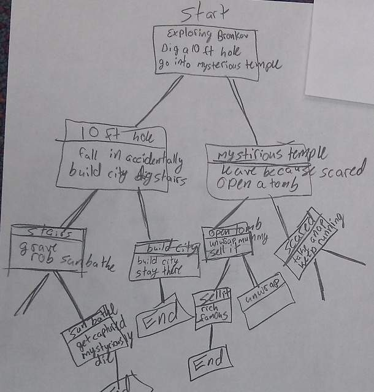
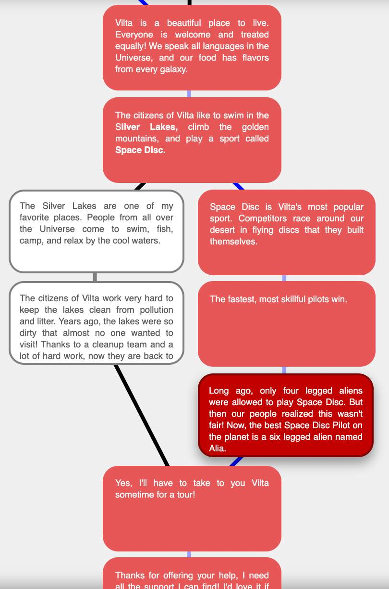

🌌 Storyboard Planning 🌌
You designed a planet in Activity 1. Now plan its story on paper: map the journey and every choice your readers will make.
🗺 Creating a Story Map 🗺
A story map shows every choice a reader can make. Here are two examples:
You need to plan out at least two sets of choices for your reader to make.


📖 What is a Branching Story? 📖
In a branching story, the reader's choices change what happens next.
🌐 Example from Filos's Planet 🌐
Read our mascot Filos's story on Inklewriter and watch how each choice changes it.
Read Filos's Story📤 Submission Guidelines 📤
After completing your storyboard, submit it here. Share a photo or a digital copy. Make sure the writing is easy to read. Keep it handy. You will build this story in ThingLink Scenario Builder in Activity 3.